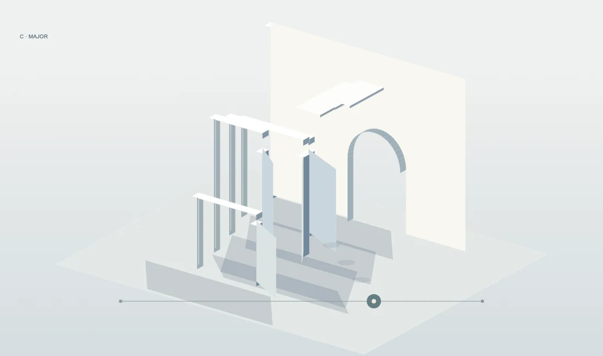
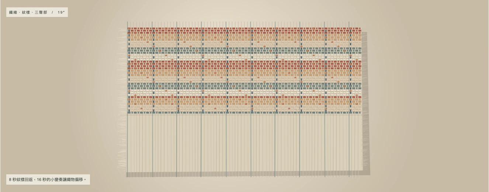
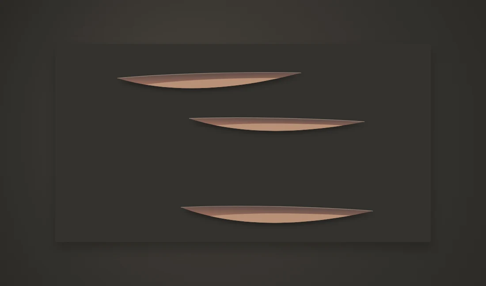
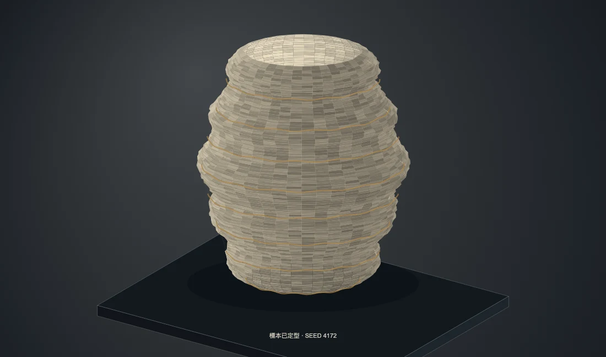
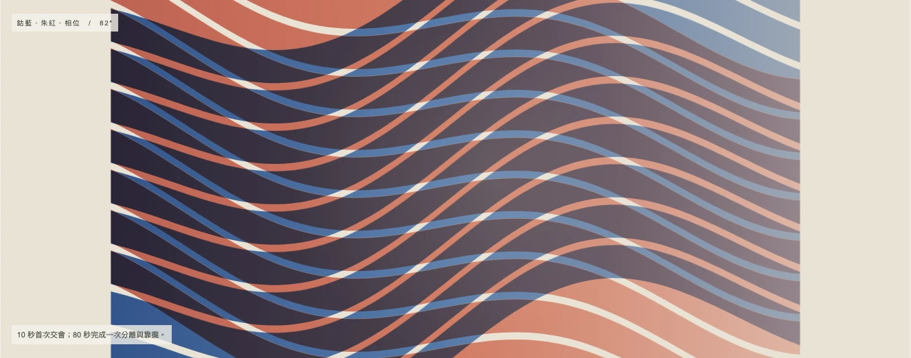
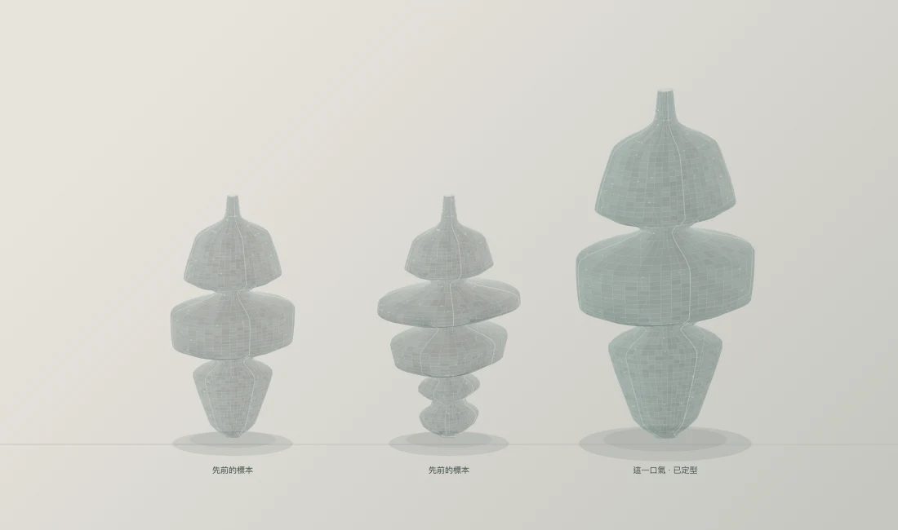
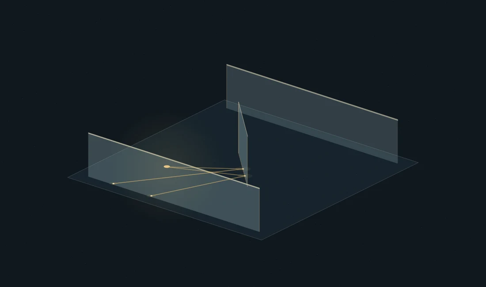
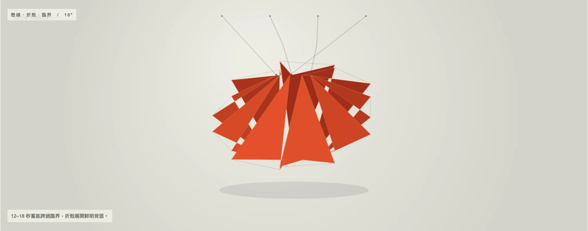

AN EXHIBITION IN EIGHT MOVEMENTS
聲音成為物質聽見之後，留下什麼？
GENERATIVE SOUND ART / 2026 / 第三輯
聲音可以是一座建築、一匹布、一道切口，或一件記得旋律的標本。
八個房間，八種時間。在這裡，耳朵看見空間，沉默留下形狀。
選一件作品。按下開始聆聽，讓聲音慢慢形成。

《空氣有自己的骨架》
長音使薄壁凝聚，和弦改寫通道。走進一座由耳朵看見的建築。

《一首歌，被織成一匹布》
低音成為經線，旋律成為纖維；熟悉的樂句，在布面上再次相遇。

《沉默把空間切開》
聲音維持表面的張力。只有沉默，能打開藏在紙面深處的暖色。

《這首歌曾經存在》
一段旋律沉積成可被端詳的物件。歌停了，材料仍記得。

《兩個幾乎同步的世界》
微小的速度差，逐漸成為一整片潮汐。交會的顏色，來自兩個時間。

《一口氣的肖像》
聲音開始，物件長出；聲音停下，留下氣息的輪廓。

《房間是聲音走過的路》
每次回聲揭露一道牆。新出現的牆，又讓下一個聲音轉向。

《尚未發生的爆發》
細線繃緊，力量留下。越過臨界的那一個音，讓藏起的顏色翻開。